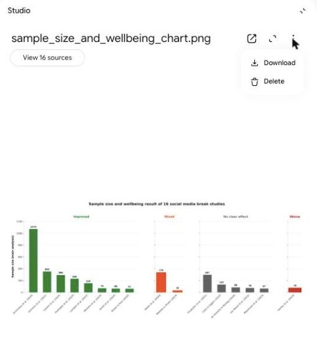

Workshop 3: Summarising a Body of Literature with Gemini Notebook
Introduction
In this workshop you will use Gemini Notebook to do a short literature review on the question: does quitting or cutting down on social media improve people’s mood?
Prior to the workshop, we compiled a collection of 14 open-access papers on this question, roughly mirroring the set used in a recent meta-analysis by Lemahieu et al. (2025), plus some more recent papers and some studies that the meta-analysis excluded.
Our goal is to get a broad up-to-date understanding of the evidence of this question, using a table of key information from each paper plus a figure summarising the pattern of results.
Part 0: Download the Papers
Download and unzip the collection: lit_review_social_media_break.zip. (On Windows: right-click → “Extract All”. On Mac: double-click the zip.)
All 14 papers are experiments in which adults were asked to quit social media, or to cut down on it, for between 1 and 28 days, and their mood and/or life satisfaction was compared with a control group. Some papers report more than one comparison (for example, Przybylski 2021 ran three separate experiments, and Hartanto 2025 had both a quit group and a cut-down group), so your table will have more rows than papers.
Part 1: Create a Notebook and Add the Papers
Go to notebook.google.com and sign in with your Google account.
Click + New notebook (on the home page) or + Create notebook (top right, from inside a notebook). You get an empty notebook with three panels: Sources (left), the chat (middle) and Studio (right).
Drag all 14 files onto the “Drag & drop your files” box at the left hand side of the screen.
Rename the notebook by clicking “Untitled notebook” at the top left.
Part 2: Ask for an Extraction Table
Click in the box at the bottom that says “Ask a question or create something”, paste the prompt below, and press Enter.
Make a table of these 14 papers.
If a paper has several experiments, or both a quit group and a social media reduction group, give each its own row.
Cite the source passage for each cell.
If a detail is not reported, write "Not stated".
Columns:
1. Study: first author(s) and year. If a paper has more than one row, name the group (e.g. "Przybylski et al. (2021), Experiment 2").
2. Design: one of RCT, Non-randomised experiment, Within-person.
3. Sample description (e.g. "78; university students, UAE").
4. Intervention: Quit or Limit; platforms; length in days (e.g. "Limit; all social media, 30 min/day; 14").
5. Positive affect result: effect on positive mood versus the control. One of: Improved, No clear effect, Worse, Not measured.After a minute or two you should get an output table. Each small number in a cell is a citation: hover over or click it to see the passage in the PDF it came from.
Check at least 5 values and claims against the original papers to ensure they are correct. If you find any errors, ask the notebook to correct them.
Also check that all 14 papers appear in the table, and that every cell in Positive affect result is one of the four allowed answers.
Part 3: Make a Figure
A quick figure helps you see the overall pattern before you write. In the same chat, try to create a visualisation that you think would be helpful to understand the pattern of results. One option is given below:
Make a bar chart from the table above with sample size on the y-axis. Color and group the bars by the Positive affect result (Improved, No clear effect, Worse, Not measured).The chart should appear as a file in the Studio panel on the right. Click it to open it. Check it against your table (every row there, in the right panel, with the right number), and ask for changes if needed (“Make the labels bigger”, “Label each bar with the study name”).
To download it, open the chart in Studio and click ⋮ (top right) → Download.

Part 4: Start Your Google Doc
We would now like to summarise the evidence in a Google Doc. Go to docs.new and create a new Google Doc. Give it a title and add these headings (Format → Paragraph styles → Heading 2):
1. Summary of the evidence
2. Comparison with the meta-analysis
3. Use of AI
4. Figure
5. Appendix: Extraction tableSummary of the evidence
Write 1-2 paragraphs yourself. Use your table, your figure, and the meta-analysis. Do not ask the AI to write them, and do not mention every study.
We reviewed [xx] experiments in which people were asked to quit or cut down on social media. Some report…. others find little change…. while a few find a cost, such as ([Author, year]).
Comparison with the meta-analysis
Your 14 papers are a hand-picked set. Lemahieu et al. (2025) is a systematic review and meta-analysis of complete breaks. Briefly review the paper abstract and figure 3 to understand the main findings.
Write 2-3 sentences on what that estimate shows that your table does not.
Use of AI
An expectation when using AI tools within academic work is that you name the specific tool you used, what it did, and how you checked the results. You can use a template like this:
I used Gemini Notebook (Google; accessed [date]) to extract details from 14 studies. I checked [X] of them against the articles and corrected [n]. I wrote the text myself.
Figure and extraction table
Next, you need to paste the extraction table under Appendix: Extraction table. You can drag to highlight the table and copy it to the clipboard, then paste it into the Google Doc.
Under Figure, download the PNG you created and insert it.
Part 5: Submission
To submit, download the doc as a PDF (File → Download → PDF document) and upload it to the submission form on the website.
Part 6: Optional Challenge: Your Own PDFs (ungraded)
Repeat Parts 1 to 4 on at least 10 PDFs you are allowed to upload. Design 4-7 short columns, as in Part 2, including one with a fixed set of answers you can chart, and add a figure and an AI-use statement. Skip the meta-analysis comparison and the summary template above. This is not part of the submission.